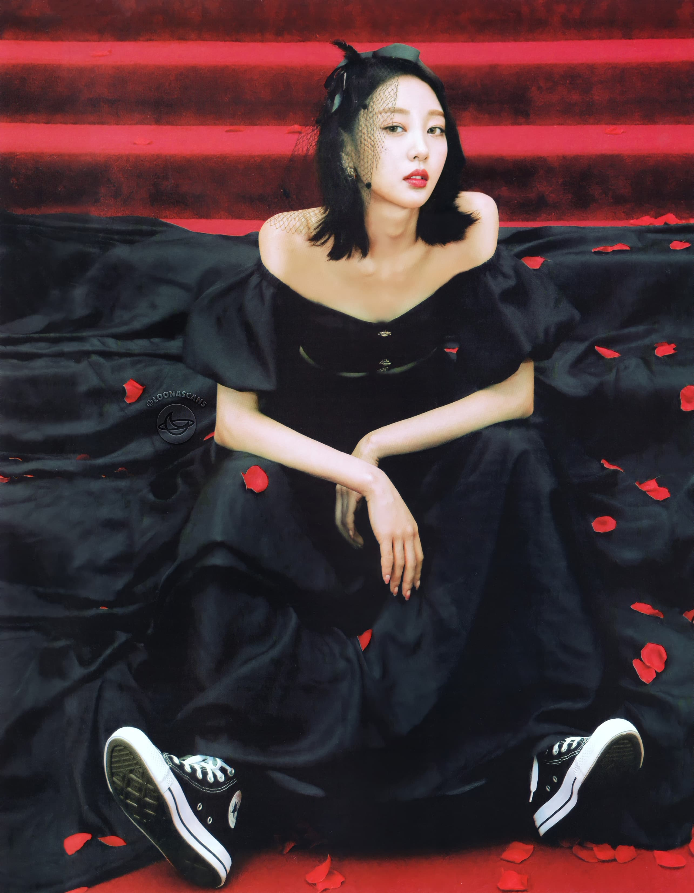

Yves is the ninth member of Loona. She debuted on November 14, 2017 as a member, and released her solo single album "Yves" on November 28, 2017.
Yves later debuted as a member and leader of LOOΠΔ / yyxy with members Chuu, Go Won and Olivia Hye on May 30, 2018 with the mini-album beauty&thebeat. Yves recalled that when she joined the company, they told her that "We are going to make a unit with a tougher concept than Odd Eye Circle, completely girl crush", and told her to look up girlcrush concepts as inspiration, and study materials. It seems like LOONA yyxy had a completely different concept originally.
| Yves | |
|---|---|
|  | |
| Full Name | Ha Soo-Young (하수영) |
| Birthday | May 24th, 1997 (23) |
| Month | August |
| Color | Burgundy |
| Animal | Swan |
| Sub-Unit | yyxy |
| Shape | Triangle |
| Zodiac Sign | Gemini |
| Blood Type | B |
She wanted to become a singer since kindergarden. As a kindergartner, Yves would always draw herself dancing and holding a mic in the ‘future dream’ section. She fostered her dreams of singing while watching senior girlgroup "Wonder Girls" performing their debut stage "Irony", in 2007. Yves said about this: "I was watching TV and saw these cool unnies in uniforms singing and dancing. You couldn't not fall for them. So I wanted to be a cool singer like them."
Yangsan being a small town, she had to go to Busan if she wanted to go to the cinema, Burger King and enjoy other urban amenities. All the academies were in Busan. She went back and forth between Yangsan and Busan every day by subway and bus. She went to a vocal academy located 2 hours away from home and a dance academy that was an hour from home. Yves said she joined her high school's dance group secretly because her mother was against it. She studied really hard and ranked #11 in her studies at school, but in Grade 11 revealed her secret to her mother because she really wanted to become a singer.
She is the first to awaken as part of yyxy, and is believed, by many, to be trying to lure everyone in the LOONAVERSE to go against HeeJin and sin.
The first big indicator of this is Yves' color. She is burgundy, which is a mix of pink and black. Which shows that she is part HeeJin and part Olivia, and therefore has qualities of both. She probably wants to be a creator like HeeJin, but wants destruction and chaos like Olivia, showing that even though Olivia is the fallen angel, Yves may be an even more powerful version of Olivia. It is assumed that Olivia created yyxy to mirror 1/3, and as we see in Egoist, Yves betrays Olivia, wanting more power than her. We see Yves influencing many members of the LOONAVERSE, including ViVi, Choerry, Chuu, Go Won, Olivia, HyunJin, and YeoJin.